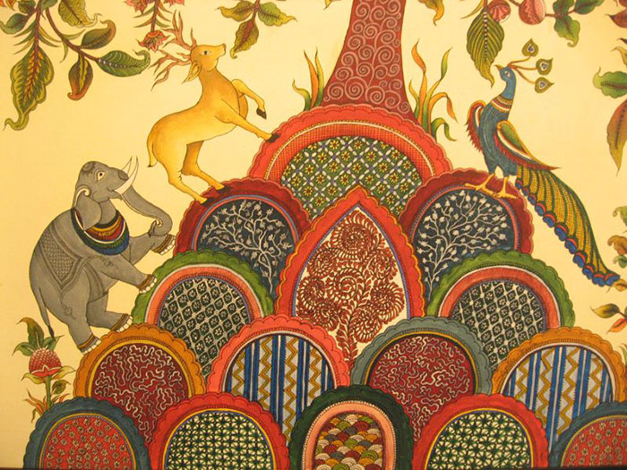

This blog contains various art forms of India. Read more about each of of them
Madhubani
These paintings find their origins and derive their name from a village called ‘Madhubani’ in Bihar. These paintings were first painted by the artists hailing from this village.
Warli
Warli art is a 400-year-old tribal art form from Maharashtra. Painted mostly by the Warli tribe women, paintings in this art form are based on nature, harvest, weddings and fertility.
Kalamkari

Kalamkari literally means, “pen-art”. Kalamkari paintings are either hand painted or block printed on cotton fabric. This art form flourished under the rule of the Golconda Kalamkari literally means, “pen-art”. Kalamkari paintings are either hand painted or block printed on cotton fabric. This art form flourished under the rule of the Golconda Sultanat. It was first developed and evolved at Machilipatnam in Andhra Pradesh but its popularity soon spread to the other states. As far as the popular belief goes, in olden days, groups of artisans, musicians and singers known as chitrakattis would travel from village to village and narrate tales of Hindu mythology. As time passed, they even started illustrating these stories on canvas and thus Kalamkari was born.
Mughal
The Mughal painting reflects a synthesis of Indian, Persian and Islamic art styles. This art form evolved between 16th and 19th centuries. The theme centred around battles, receptions, court scenes, hunting scenes, legendary stories, portraits and wildlife.